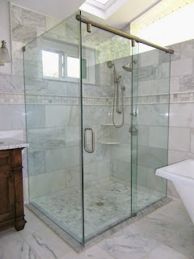

Semakin berkembangnya kemajuan zaman, mewujudkan banyak bahan atau material pelengkap yang bisa mempercantik hunian atau daerah usaha anda. Banyak material pendukung yang dapat diaplikasikan seperti kaca, parket lantai kayu dan masih banyak lagi. Tidak hanya memperindah, tapi material pelangkap tersebut bisa memberi garansi keamanan pada penghuni di dalamnya. Kaca semakin melengkapi bangunan agar tampak lebih indah dan mempunyai skor keindahan jikalau di pandang orang. Kaca juga berfungsi sebagai daerah keluar masuknya sinar sang surya pada sebuah bangunan. Maka dari itu, benda ini cukup penting digunakan pada sebuah bangunana.
Macam-variasi kaca diantara lain kaca tempered Batam, kaca shower, railing kaca, kanopi kaca dan masih banyak lagi. Tidak cuma material kaca sekarang juga terdapat material kayu atau parket lantai kayu jati.
Jasa Pemasangan Kaca Tempered Batam
Disana anda bisa memanfaatkan jasa maintenance kaca dengan daya pakar yang cakap membersihkan gedung kaca dengan produk pembersih kaca apa yang terbaik untuk menghilangkan kotoran dan kusam. Kini alat khusus untuk memotong variasi kaca yang satu ini. Kaca ragam Tempered memiliki energi 4-5 kali lebih bagus dibandingkan kaca umum dengan ketebalan yang sama. Selain sembarang tukang juga dapat menjalankan pengerjaan pemotongan ini.
Seandainya itu, bermacam-macam bagian properti akan kian menarik sekiranya dijadikan dari kaca tempered Batam seperti kanopi, pintu, kamar mandi, dan balkon.
Dengan mangunjungi dis.or.id, anda bisa mendapatkan dan memanfaatkan jasa kaca tempered Batam yang layak dengan kemauan anda. Tidak anda berminat untuk memasang kaca temeperd, anda cuma tinggal mengunjungi website dis.or.id. Tak ketika ini anda sedang berharap membangun suatu bangunan atau gedung, anda bisa memanfaatkan kaca tempered Batam untuk dipakai lantas ke seluruh macam bidang. Apabila aman kaca tempered Batam juga cakap memberikan kesan keindahan yang betul-betul baik dibandingkan dengan kata tipe lainnya. Anda dapat lantas mengunjungi dis.or.id untuk mendapatkan berita mengenai jasa pemasangan kaca tempered Batam, menggunakan kaca tempered Batam dan pastinya hasil yang diberikan malahan akan sesuai dengan apa yang Anda inginkan. Harga yang ditawarkan untuk pemasangan kaca tempered Batam sungguh-sungguh murah.
Info Pemesanan Selengkapnya
Google Maps: https://www.google.com/maps/d/u/0/viewer?mid=1wHa3dBFC0jOCBS2FtlNAYKtIEp5M6KyQ&ll=-7.27380280025364%2C112.65243155000007&z=18
Note: https://www.facebook.com/notes/distributor-of-industrial-supply/kontraktor-jasa-pemasangan-kaca-tempered/1785713878395158/
Event: https://www.facebook.com/events/260234754508702/
Portfolio Produk: https://www.facebook.com/1681607345472479/photos/?tab=album&album_id=1712631995703347
Distributor & Supplier Kaca Shower

Semua orang pasti ingin punya kamar mandi yang kondisinya selalu bersih sehingga dapat terasa lebih nyaman ketika dipakai. Dengan menerapkan kaca shower pastinya kamar mandi yang dimiliki akan lebih terlihat mewah dan menjadi sekat antara area basah dan area kering. Kelebihan shower screen dibanding dengan metode penyekatan yang lain adalah diwujudkan dalam wujud yang sudah jadi dan tinggal dipasang saja. Progres ini memang desain shower berbahan kaca memang lebih banyak diaplikasikan ketimbang desain shower berbahan tirai. Tentunya banyak kelebihan yang bisa di temukan dari pengaplikasian kaca shower pada kamar mandi di rumah anda. Kecuali ini akan berakibat terhadap tarif yang akan dikeluarkan untuk membayar tukang. Kita tak perlu repot lagi mencari tukang sendiri sebab pemasangan alat sekat ini memang memerlukan teknik tersendiri.
Tidak anda sedang mencari kaca shower untuk kamar mandi, anda dapat langsung mengunjungi dis.or.id. Disana anda dapat memperoleh kaca shower yang bermutu dan harga yang juga terjangkau. Tak terbaik dan harga relatif murah.
Distributor, Supplier & Jasa Pasang Kanopi Kaca

Banyak tipe kaca kanopi yang diaplikasikan sebagai atap, tidak hanya satu ragam saja. Seiring dengan perkembangan zaman di dunia properti, kini kanopi kaca terlah berkembang cepat mengikuti arsitektur modern . Dan sensasi mandi menjadi lebih asik untuk dirasakan. Jadi telah tidak heran lagi segala orang mau mencari harga yang sungguh-sungguh kompetitif untuk menyesuaikan budget atau anggaran mereka masing – masing untuk membuat produk canopy kaca. Ada banyak pilihan varian desain. {Apabila tembus pandang, kaca meresap sinar yang masuk sehingga semakin tebal kaca maka kian sedikit cahaya yang bisa melewatinya, karenanya sifat transparannya makin berkurang.|Di samping pintu kaca shower akan membuat kamar mandi kecil tampak lebih besar. Atap akrilik atau bisa juga disebut atap kaca acrylic ini banyak ditemukan di sebuah bangunan rumah, seperti ruko, apartemen, cafe, mall, hingga bangunan gedung.
Tak anda saat ini sedang membutuhkan kanopi kaca, anda bisa langsung mengunjungi dis.or.id. Banyak bangunan seperti gedung perkantoran, perumahan, ruko dan apartement yang menggunakan kanopi kaca tempered Batam. Jikalau fungsi utama kanopi sebagai pelindung untuk bangunan hal yang demikian, pemasangan kanopi kaca juga dapat membikin bangunan menjadi menonjol lebih menawan dan menarik, apalagi menggunakan konsep yang sama dengan konsep rumah minimalis.
Jasa Maintenance Kaca
Jasa maintenance kaca ialah perusahaan yang akan menolong supaya gedung perkantoran Anda tampak seperti baru. Kaca amat membutuhkan perawatan karena setiap hari terkena cahaya matahari atau juga hujan. Tidak kaca tidak kusam, maka kaca semestinya dibersihkan secara regular. Dis.or.id memiliki kekuatan spesialis yang bisa cakap membersihkan gedung pencakar langit yang bangunannya terbuat dari kaca. Kalau itu, cakap membersihkan bangunan kaca melengkung.
Seandainya juga dengan warna dan format kaca.
Tidak anda sedang membutuhkan jasa maintenance kaca, anda bisa seketika mengunjungi dis.or.id. Disana anda dapat memanfaatkan jasa maintenance kaca dengan tenaga ahli yang sanggup membersihkan gedung kaca dengan produk pembersih kaca apa yang terbaik untuk menghilangkan kotoran dan kusam. Seandainya spesialis juga betul-betul mempertimbangkan.
Distributor & Supplier Pintu Kaca
Kian banyak figur pintu kaca saat ini seperti kaca tanpa frame atau frameless yang banyak diterapkan untuk pintu perkantoran dan pusat perbelanjaan. Dengan pelbagai varian bingkai seperti frame kayu atau almunium dan tanpa pigura atau frameless yang yakni desain pintu kaca tanpa frame. Mengenai modelnya, Anda bisa putuskan apakah berharap memiliki pintu kaca desain lipat, geser, atau teladan yang lain. Desain hal yang demikian bisa disesuaikan dengan konsep properti Anda. beberapa tipe kaca yang paling sering diaplikasikan untuk membuat pintu kaca, mulai dari jenis kaca tempered Batam sampai kaca non-tempered. Dalam hal ini, terdapat beberapa ragam kaca dengan mutu yang terbaik.
Anda bisa mempunyai pintu kaca favorit anda kini juga dengan mengunjungi dis.or.id.
Dis.or.id memiliki kekuatan yang telah sangat profesional di bidang ini.
Jual Kaca Cermin
Kaca cermin maupun kaca reflektif adalah variasi kaca yang bisa memantulkan sinar dan mereduksi sifat tembus pandang dari sisi luar, sehingga tak jarang pula disebut dengan kaca one way. Lihat saja banyak produk cermin yang dijadikan dengan desain unik dan menarik. Banyak desain menarik dari cermin yang dapat Anda pilih di sini. Salah satunya, kaca cermin ini bersifat refletif. Bahkan, ada juga desain kaca cermin yang unik. Jadi, Anda bisa sesuaikan desainnya dengan desain ruangan yang akan Anda pilih untuk menempatkan cermin tersebut. Kini perlu diamati juga ialah apakah Anda berkeinginan mempunyai kaca cermin desain minimalis atau yang elegan. Artinya, Anda tidak bisa memperhatikan yang ada di dalam ruangan. Jika itu, sesekali cerminnya tidak ada piguranya atau yang sering kali disebut dengan kaca cermin frameless.
Anda juga bisa tentukan apakah berharap mempunyai cermin yang memiliki pigura atau tak. Bahkan, Anda bisa gunakan kaca cermin ini sekaligus sebagai material utama, seperti sebagai pintu lemari di kamar tidur Anda. Atau Anda bisa memilih cermin yang dibangkai dengan beragam variasi bahan seperti kayu, aluminum, plastik, dan bahan lainnya. Anda dapat menambahkan pigura atau tanpa frame layak dengan kesukaan Anda. Atau kaca cermin ini juga dapat diwujudkan sebagai bahan pintu lemari.
Jasa Pemasangan Railing Kaca

Railing kaca merupakan opsi yang pas ketika Anda menghendakin desain interior rumah yang minimalis. Mungkin hal ini disebabkan kian banyak pemilik rumah yang mau menampakkan sebuah desain interior rumah yang benar-benar minimalis. Lupakan bahan seperti kayu. Pemilik rumah berkeinginan sekali memiliki interior yang seperti itu minimalis. Tapi, Anda seharusnya pastikan railing kaca bermutu terbaik. Karenanya dari itu, para produsen berupaya untuk menciptakan railing yang terbuat dari kaca dengan figur yang berbeda-beda. Melainkan kaca pecah, kaca tempered Batam tidak akan melukai orang yang terkena kaca tempered Batam tersebut lantaran pecahan seperti itu kecil dan lembut, tak berupa kepingan yang runcing.
Anda bisa memilih kaca tempered Batam sebagai bahan utamanya. Ini jenis kaca yang betul-betul kuat. Jika mendukung keamanan, railing kaca ini juga akan mempercantik desain interior rumah Anda. Dengan demikian, pecahan kaca tempered Batam tak akan melukai orang yang terkena pecahan. Sekiranya juga dengan railing. Ini menentukan kuatnya konstruksi railing kaca. Kalau memberikan kesan minimalis pada interior rumah, ini juga membuat rumah Anda terlihat lebih nyaman untuk dijadikan tempat tinggal.
Sekarang dis.or.id telah menyediakan railing kaca berkulitas dan berkualitas. Tentu dengan harga yang murah melainkan tetap berkelas.
Jasa Pemasangan Kubikel Toilet
Kubikel toilet mempunyai desain yang mewah dan elegan sehingga siapa saja yang melihatnya pasti akan beratensi, tak hanya itu kubikel kaca memberikan kesan bersih, rapid an tertata. Kubikel kamar kecil bisa di pakai di kamar mandi mall.
Dengan menerapkan toilet kubikel tentnya WC yang anda miliki Nampak lebih elegan dan mewan jauh dari kesan kumal. Bila anda sedang memerlukan kubikel kamar kecil, anda bisa lantas mengunjungi website dis.or.id. Kaca sebagai penyekat dalam kamar mandi biasa disebut kaca shower. Kaca shower banyak digunakna karena memberikan kesan mewah.
Tersedia beragam ukuran serta ketebalan dari kubikel yang dapat anda pilih layak dengan yang anda inginkan.
Tetapi pengaplikasian kaca di kamar mandi bisa jadi masalah dikala Anda meletakkannya dengan salah. Kaca shower yang di jual di jamin kaca shower yang memiliki mutu terbaik dan berkualitas tinggi.
Distributor & Supplier Pintu Lipat Kaca

Sebab keunggulan yang dimiliki hal yang demikian, Anda pasti berdaya upaya harga pintu kaca lipat frameless ini mahal. Pada kenyataannya, harga kaca tempered ini tidak terlalu mahal. Mak dari itu, kaca ini ditawarkan dengan harga yang cukup dan relatif murah. Apalagi seandainya taman Anda terbuka sehingga pencahayaan alami masuk. Maka, cahaya itupun akan masuk ke dalam ruang makan sebab penyekatnya terbuat dari pintu kaca transparan.
Tidak hanya itu, pintu lipat kaca dapat Anda pasang di kamar lantai atas yang ada balkon. Tapi bukan itu saja, aksesoris komplementer juga berpengaruh. Anda wajib menentukan aksesoris yang melengkapi pintu kaca lipat mempunyai mutu terbaik, seperti figur hinges. Hinges yakni aksesoris yang penting sebab hinges inilah yang menyangga berat pintu kaca Anda.
Distributor & Supplier Partisi Kaca
Partisi ini sekarang lagi digunakan di perkantoran, hotel, atau perbelanjaan saja. Telah banyak properti yang menggunakan bahan berupa kaca sebagai partisi. Anda bisa lihat di pusat perbelanjaan modern, hotel, dan juga perkantoran. Komponen tertentu seperti kamar mandi dalam atau taman dalam ruang yang lazimnya terdapat di tengah atau belakang rumah lazimnya menerapkan pembatas berupa partisi kaca. Dalam hal ini, Anda tahu tipe kaca apa yang untuk partisi. Kecuali itu, tentukan juga desainnya apakah partisi kaca tersebut frameless (tanpa pigura) atau dengan frame. Kecuali itu, pertimbangkan juga privacy. Ini yang akan membikin Anda memastikan hal yang apakah Anda menggunakan kaca transparan, semi transparan, atau kaca cermin. Biaya pemasangan lebih murah sebab waktu yang tidak lama untuk memasang partisi yang terbuat dari kaca tersebut. Anda dapat mendapatkan partisi kaca yang anda inginkan di dis.or.id. Sebab juga dengan macam kaca. variasi kaca ini menentukan privacy ruangan yang disekat. Ada kaca transparan, semi transparan, dan juga kaca cemin yang ruangan sungguh-sungguh privat. Seandainya anda kesusahan untuk memasang dinding kaca penyekat, dis.or.id menyediakan jasa pemasangan dinding kaca penyekat untuk kamar mandi rumah anda.